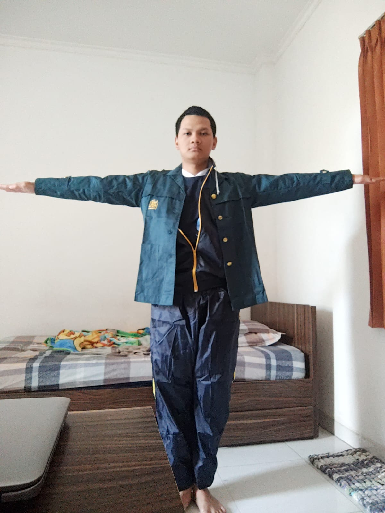

Muhammad Luqman Hakim
Saya adalah seorang mahasiswa semester 5 di prodi Teknik Informatika ITB (NIM 13523044). Saat ini, saya tertarik dengan bidang AI.
Pada waktu luang saya, saya juga suka belajar bahasa (saat ini saya belajar bahasa Jepang), bermain musik, baik musik modern maupun musik tradisional, dan belajar fisika.
Proyek
AI Gamelan
Javanese Gamelan Composition Using Modified N-Gram Language Model
BGBot
BackGammon bot in Haskell